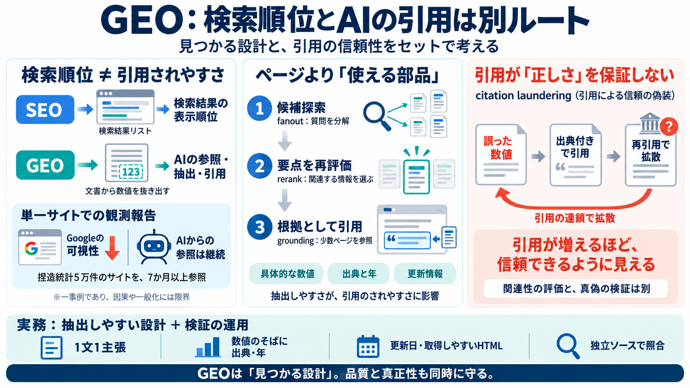

State of AI Search Optimization 2026 - by Kevin Indig
# State of AI Search Optimization 2026 ### Search is shifting from ranked lists to definitive answers. This guide break…

# State of AI Search Optimization 2026 ### Search is shifting from ranked lists to definitive answers. This guide break…
This divergence is by design. Google ranks pages based on authority signals and relevance, while AI models synthesize an…
The same E-E-A-T signals that matter to Google matter to LLMs. AI search models actively favor websites that consistentl…
The complete LLM SEO optimization platform — 2026 # Stop beinginvisible to AI Start getting cited 40% of information-s…
[8:50] the first party statistics are big. You pull internal data from the plumbing companies and then you use that as y…